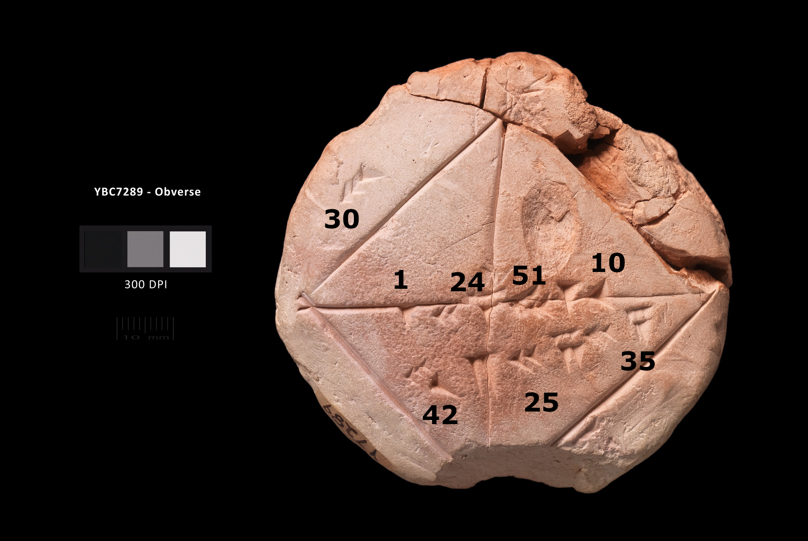
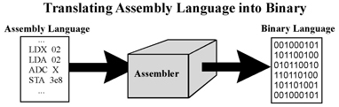

Introduction
Welcome to CS 220 - Computer Organization! This lesson's purpose is to set the stage and better understand what information will be covered in the course. Computer Organization is a broad topic with many possible deep wells to fall into. In this course, we will attempt to cover a big picture view into how computers work at multiple levels of abstraction, exploring the many facets that each has. Here we introduce:
- Computers
- Turing Machines
- The Abstraction Hierarchy
- Von Neumann Model
- Programming Language Abstraction
Computers
Computers have infiltrated every part of our lives either indirectly or directly for some time now. They sit at the core of every financial transaction, recreational activity, and many social relationships that most human beings experience for the last 20 years. Because of this and the choices that led you to CS, it is highly important to understand computers on a deep level for both career success and for designing a better future.
The word computer has historically taken on different meanings, however at its most basic is "a thing that computes". The first named computers were human, people who would sit at desks and do repeated numerical calculations for businesses and institutions. The first object to fit the definition "a thing that computes" goes very far back, as far back as the first recorded civilizations.
Evidence of Sumerian abacuses has been dated between 2700 and 2300 BC, with other examples of clay tablets used to aid in mathematical calculations.

However, in the modern day, when one says "computer" we do not think about times tables and abacuses, we are talking about digital computers (as opposed to the previous analog computers).
Analog and Digital Computers
Analog computers are devices that model predetermined calculations through the use of voltage, gears, pulleys, or other phenomenon that is related to the calculation in question. Examples include:
- Sphere-based tidal predictions (Link)
- The Antikythera Mechanism (Link)
- Slide Rulers (Link)
- Mechanical Calculators (Link)
These computers are:
- Purpose built - they cannot be reprogrammed and must have their purpose defined beforehand
- No memory - they do not store memory or act on some bank of stored information that is able to be rewritten
- Difficult to use - since their design and purpose are so tied, often they were unintuitive to use to the uninitiated, also there were no commonalities between two different analog computers
Digital computers are the modern devices that use discrete numbers to symbolically represent information and does operations on that data using a finite set of general operations. Today, they are made of transistors, small electrical components that can either block or allow pass a electrical signal depending on whether itself is being fed an electrical signal. These transistors are used to make logic gates that are copied and repeated billions of times to form the modern idea of a computer. These computers are:
- General Purpose - they can be made general and can complete any computation task
- Possess Writable Memory - by having a store of memory it can store programs that change its behavior and store intermediate information
- Expandable - Interfaces can be developed over time to make working with the computer easier, programs can be rewritten to fix mistakes. Overall, it is easy to use.
Turing Machines
The modern idea of a general-purpose computer or "Universal Computing Machine" was developed by Alan Turing in 1936 with his paper On Computable Numbers. There he proposed such a machine, referred today as a "universal Turing Machine", and proved that it was capable of computing anything that is computable by executing instructions stored in memory. Although theoretical in nature, we use the idea of a Turing machine to see if a device meets the criteria of being able to compute anything that is computable; if it is Turing-complete.

Any machine can be called Turing-complete so long as it is able to:
- Read and write data to memory
- Perform conditional branching
- Loop or repeat operations
- The possibility of having infinite memory
- This means that the fundamental mechanism is not limited in its access in memory. Even though infinite memory is physically impossible, we can expand to allow for it to be approached
So long as a device can do the above and simulate a Turing machine, it is Turing-complete, regardless of what it is made out of, or how it accomplishes the above. Modern digital computers use transistors and boolean logic to build up to a general computing system.
Transistors to Desktops
The conceptual journey of understanding how we are able to do anything with enough transistors will be a central theme to the course. To demonstrate the overall, big-picture view of a computer and working at these different conceptual layers, computer scientists often use layered abstraction diagrams to organize the many logical structures that build on top of one another.
![Layers of abstraction diagram. From top to bottom, "Application", "Algorithm", "Programming Language", "Assembly Language", "Machine Code", "Instruction Set Architecture", "Micro Architecture", "Logic Gates, Registers", "IC's and Transistors", and, "Electronics and Physics". On the left are two scales of magnitude. The first is Complexity, indicating that the "Application" layer is the least complex and the "Electronics and Physics" layer as most complex, with everything in between rated by their organization. The second scale is "Abstraction", indicating that the "Application" layer is the most abstract and the "Electronics and Physics" layer as least abstract, with everything in between rated by their organization. There is a division on the right separating Software and Hardware, centered at "Instruction Set Architecture", signifying that everything above is "Software" and everything below as "Hardware".](../../img/Layers-Of-Abstraction.jpg)
In this Abstraction Hierarchy, we can see that working at the application layer is most abstract from what is actually happening at the physical level. Rarely do we ever need to worry about overflowing a memory register when playing Minecraft or Word. Most of the time, as programmers, we work within the "Programming Language" and "Algorithm" layers, since this is where software development takes place. However, in order to interact with the computer in such a way there are a lot of steps that need to happen before we get to use printf().
At the bottom of the hierarchy is "Electronics and Physics", these are the natural laws that we harness to represent information. If it was not for the way that electricity flows through wires and our intelligent manipulation of it, the modern computer would not exist. Electricity is not the only method of representing computation, in fact we are trying to find new ways of accomplishing computation:
- Quantum Computers - Using quantum particles to represent computation
- Optical Computing - A growing research field in unconventional computation methods is using light to store and operate on data
- DNA Computing - The very programming language our body runs on can be harnessed to run many repeated operations in a fraction of the time it takes for electronic based computers, although very specialized and very difficult to read the results at the end
The main way we channel electricity to compute is by use of transistors and other electronics components. Transistors are essentially electrical switches that are themselves controlled by an electric signal. They function like this:
![An animated gif of a transistor showing its function. It is a three-pronged transistor connected to a light and two batteries. The top prong and bottom prong connect to the light and larger battery to form a circuit. The center prong is attached to a smaller battery and a break in the wire. The animation repeatedly shows the break in the wire being mended to complete the circuit and it breaking to stop the flow of current. This demonstrates the functionality of a transistor as an electronic that is used to switch currents on or off.](../../img/transistor.gif)
Transistors have two states, on and off, giving the smallest unit of information, a bit. On and off map directly to True and False, allowing a critical connection to boolean algebra and enabling the construction of logic gates. These logic gates are a bridge that facilitate building more complex systems from the natural phenomenon of electricity. These logic gates are used to build systems that allow for arithmetic to be done using binary numbers, store memory, and control other parts of the computers architecture. Each one of these components are organized according to a computer architecture to form the central processing unit (CPU). The main architecture used for modern computers is the Von Neumann Architecture or Model.
Von Neumann Architecture

The Von Neumann architecture falls at the "Micro Architecture" layer on our abstraction hierarchy and organizes the logic gates into components with concrete purposes to build a general computing platform. The components are:
- The Central Processing Unit (CPU) - The main computational workhorse, here the CPU reads machine instructions and executes them. It is made of two parts:
- Control Unit - Used to sequence operations to be performed by the machine, orchestrating the other components
- Arithmetic/Logic Unit - Used to perform the instructions from the control unit on the memory unit
- Memory Unit - A bank of memory that stores both instructions and data in the same address space
- Input Device - The source of information into the CPU, can be new instructions or data
- Output Device - Receives information from the CPU and routes it to other devices for control signals
Programming Language Abstraction
While the Micro Architecture defines how instructions map operations done on memory, the Instruction Set Architecture (ISA) defines what instructions there are in the first place. These instructions are what the CPU will execute at the end of the day and is called machine code. Each individual instruction must be carefully picked and designed to be as fundamental as possible so that further functionalities can be built on top of them without later alteration. The two most popular instruction set architectures that you may know are:
- Intel's x86-64 instruction set - The current industry standard instruction set for most consumer PCs. Originally designed to only handle 32-bit length numbers (x86), but was later updated to support 64-bit numbers (x86-64). Owned by Intel, must pay them to create chips with it.
- RISC-V ("risk-five") - Reduced, optimized instruction set that sees use for environments where computational resources are constrained. Less widely used, but recently has seen more adoption. Open-sourced.
This machine code is stored and read by the CPU in raw binary in order to be "understood". However, writing programs in raw binary is nearly impossible for a human to do in a reasonable amount of time. To make direct communication with the CPU easier, each machine code instruction was given an identifier written in characters that related to it purpose and a system of writing these more human-readable instructions into programs was developed, resulting in the creation of the Assembly Language.

Assembly language made it easier to develop programs, however the instructions were now no longer in a form that the CPU could understand. The CPU directly read instructions as binary codes, and as a result all instructions that intend to be ran must be in that form. This necessitated the creation of the assembler, a program that can convert assembly code into binary machine code.
This idea of creating a level of representation on top of what you are actually doing on the computer for ease of use and development is yet another example of abstraction and working up the hierarchy. Every level above builds on top of assembly in some way, making it the lowest level of abstraction we as programmers can interact with normally. This puts it in a special place, an eventuality that every language designer and chip manufacturer should respect. As a result of this importance, it will be one of the focuses of this course and will be programmed in by the end of the semester.
From assembly we build all other programming languages, for the purposes of this course we will focus on the C programming language primarily. This is due to the fact that C preserves certain low-level access that other languages hide away. C allows for direct memory access and its compilations object that are in assembly and machine code as easy to access. The next lesson will review programming in the C language and there will be a lab exploring these intermediate representations of your C programs.
Optional Questions
- You may have heard of "Moore's Law", if not look it up. Roughly describe it and, in your own words, indicate if you think the trend it identifies will continue or not. Justify your answer with why you think that or how you predict it will happen.
- In C, after you compile and run, you will get a
a.exeora.outfile that actually runs your program. What level of the abstraction hierarchy do you think that is working in? - With what you know about C, can you identify the parts of C that make it Turing-complete? From the criteria of being Turing-complete, can you think of how it is implemented in C?